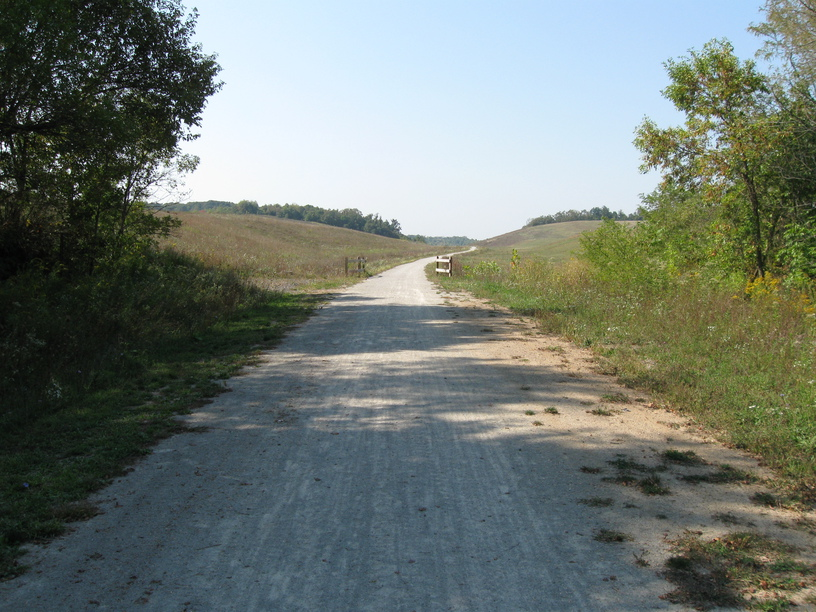
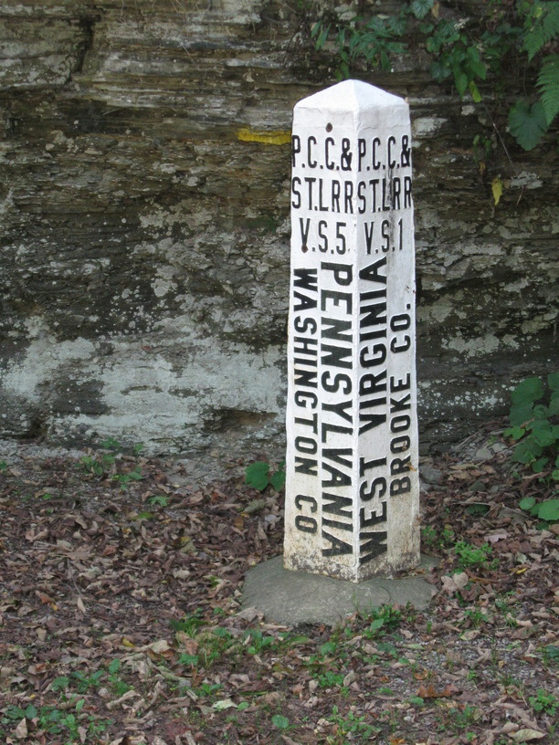

23 Sep 08
I had a nice day stay in Pittsburgh with Kyle yesterday & today, but with 200 miles between PGH and CMH, I had to keep my rest day short. Riding into PGH was a bear—bad roads, bad traffic, bad signage & a really bad hill—just about every cycling headache possible. One hill was so bad I pushed my bike up it. Luckily, though, I had plenty of time, and I took it easy and didn't get frustrated.
Seeing Kyle was fun—it's hard to believe the (grad) student lifestyle is still out there & available to me & my peers. In some ways it's very appealing—the incredible flexibility of what hours you work, and where you work—but I also feel that, at least at the moment, it's not for me. I like having my irons in many different fires, and a Ph.D. program is too long and too focused for me right now.
Anyway, I left PGH at around noon today. My route picked up a rails-to-trails trail about 10mi outside PGH. Luckily, I stopped to look at the map, and noticed first that someone had written in that the one section marked "under construction" had in fact been completed in August, and second that the trail paralleled the route I was planning to take. So in the end, instead of just 10 or so miles on the trail, I was able to ride it for 30 miles, all the way to WV. As I came to the end of the trail, I asked some ladies (who were enjoying the beautiful weather by sitting in their convertible with the top down) about the nearby streets, hoping to pick up my route again easily. After they debated amongst themselves for a bit, and quizzed me on my route, they decided I should continue down the trail, past the end and through a rail yard to get back to Rt. 2. That ended up being a kind of fun adventure, because the rail yard was basically covered in gravel and stone, and it made steering difficult. I made it through, though, and popped right out onto the road that would take me across the Ohio river (for the second time day, it might be noted, because I crossed it leaving PGH).
Climbing out of the river valley was very difficult, and I think I am going to get my cassette (& derailleur?) changed when I reach CMH so I have more lower gears. But I made it.
I stopped for the night in Wintersville, OH. I know because I'm camping next door to the water tower, and it says so. I just went up to a door, knocked & asked if I could pitch my tent in their backyard & be gone in the morning. The woman—whose name is Sandy—said yes, and a few minutes later brought me a doughnut and a root beer. Her neighbors, Lisa & Chelsea, also came out & gave me a bottle of Gatorade. We talked for a bit, then everyone returned to their respective houses, and I went ahead and started dinner.
People are so nice.

